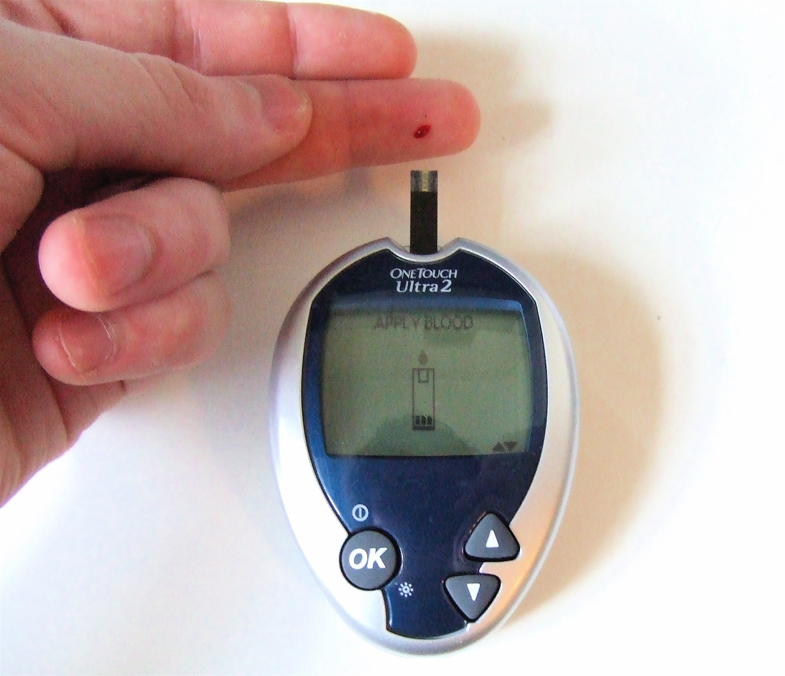

Porta da crise · VA + circulação · glicemia capilar mandatória
1. Estabilizar
Ao receber o paciente em crise: estabilizar — avaliar via aérea e circulação.
2. O único exame mandatório
O único exame mandatório nesse momento é a glicemia capilar.
3. Hipoglicemia não se "desliga" com AED
Se for hipoglicemia: faz-se glicose — não antiepiléptico; a glicose melhora o paciente. Estabilizado e glicemia abordada: aí se entra no tratamento medicamentoso da crise/status.
Via aérea
Avaliar permeabilidade · posicionar
Circulação
Acesso venoso · sinais vitais
Glicemia capilar ← MANDATÓRIA
Único exame obrigatório neste momento
🔸 Hipoglicemia → GLICOSE (não AED) | 🔸 Ok → tratamento medicamentoso da crise/status

Glicemia capilar de ponto de cuidado: glicosímetro + gota no dedo (ato mandatório na porta da crise). David-i98, 2007 · Wikimedia Commons · CC BY-SA 3.0. mandatória
⚡ Pegadinha de prova
Banca pode oferecer "fenitoína" ou "diazepam" antes de glicemia em vinheta com suor/jejum — a ordem manda: glicose se hipo.
Por que importa
Hipoglicemia tratada com AED é erro clássico de porta.
📌 Resumo operacional
Estabiliza VA + circulação. Único exame mandatório: glicemia capilar. Hipoglicemia → glicose, não antiepiléptico.
🧠 Quiz
Q1. Paciente em crise no PS. Qual o único exame mandatório imediato citado no raciocínio de porta?
Q2. Glicemia 38 mg/dL, ainda em crise. Conduta prioritária: